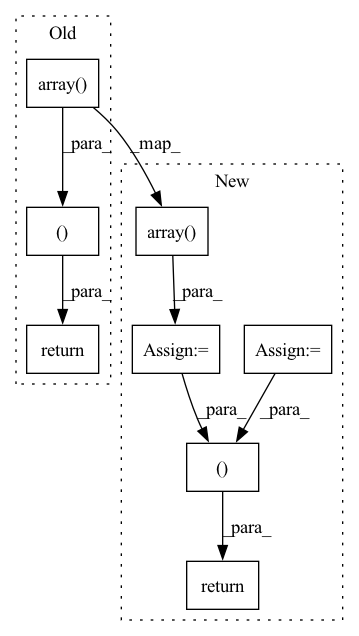

Pattern ID :26063

Before Change
def query(self, keys: "np.ndarray", top_k: int, *args, **kwargs) -> Tuple["np.ndarray", "np.ndarray"]:
ret = self.query_handler.Search(keys, top_k)
idx, dist = zip(*ret)
return self.int2ext_key[np.array(idx)], np.array(dist)
After Change
dist = np.ones((keys.shape[0], top_k)) * (-1)
for r_id, k in enumerate(keys):
_idx, _dist, _ = self.query_handler.Search(k, top_k)
idx[r_id, :] = self.int2ext_key[np.array(_idx)]
dist[r_id, :] = np.array(_dist)
return idx, dist
In pattern: SUPERPATTERN
Frequency: 4
Non-data size: 8
Instances
Fragment ID: 78660464
Project Name: jina-ai/jina-hub
Commit Name: 6d287879dda4307a96604215d0727af560651c2f
Time: 2020-08-24
Author: Nan.Wang.28@gmail.com
File Name: indexers/vector/SptagIndexer/__init__.py
M Class Name: SptagIndexer
N Class Name: SptagIndexer
M Method Name: query(3)
N Method Name: query(3)
M Parent Class: BaseNumpyIndexer
N Parent Class: BaseNumpyIndexer
M File Name: indexers/vector/SptagIndexer/__init__.py
N File Name: indexers/vector/SptagIndexer/__init__.py
M Start Line: 51
M End Line: 53
N Start Line: 51
N End Line: 57
'>
Before Change
for img_l, img_h in batch:
images_l.append(img_l)
images_h.append(img_h)
return np.array(images_l), np.array(images_h)
After Change
images_l.append(img_l)
images_h.append(img_h)
images_l = torch.from_numpy(np.array(images_l, np.float32))
images_h = torch.from_numpy(np.array(images_h, np.float32))
return images_l, images_h
'>
Fragment ID: 78660457
Project Name: bubbliiiing/srgan-pytorch
Commit Name: 3ef6a811815d66aedf0c5f57359f716542e509a3
Time: 2022-07-16
Author: 3323290568@qq.com
File Name: utils/dataloader.py
M Class Name: AnonimousClass
N Class Name: AnonimousClass
M Method Name: SRGAN_dataset_collate(1)
N Method Name: SRGAN_dataset_collate(1)
M Parent Class:
N Parent Class:
M File Name: utils/dataloader.py
N File Name: utils/dataloader.py
M Start Line: 153
M End Line: 158
N Start Line: 163
N End Line: 171
'>
Before Change
"curves"
)
inds = np.argsort(-np.array(confs), kind="mergesort")
tp_fp = np.array(tp_fp)[inds]
tp_sum = np.cumsum(tp_fp).astype(dtype=float)
total = np.arange(1, len(tp_fp) + 1).astype(dtype=float)
pre = tp_sum / total
rec = tp_sum / num_gt
q = np.zeros(101)
for i in range(len(pre) - 1, 0, -1):
if pre[i] > pre[i - 1]:
pre[i - 1] = pre[i]
inds = np.searchsorted(rec, recall, side="left")
try:
for ri, pi in enumerate(inds):
q[ri] = pre[pi]
except:
pass
precision[idx][c_idx] = q
return precision, recall, iou_threshs, classes
def _copy_labels(labels):
if labels is None:
After Change
// Compute precision-recall
// https://github.com/cocodataset/cocoapi/blob/master/PythonAPI/pycocotools/cocoeval.py
precision = -np.ones((num_threshs, num_classes, 101))
thresholds = -np.ones((num_threshs, num_classes, 101))
recall = np.linspace(0, 1, 101)
for idx, _thresh_matches in enumerate(thresh_matches):
for c, matches in _thresh_matches.items():
c_idx = class_idx_map.get(c, None)
num_gt = matches["num_gt"]
if c_idx is None or num_gt == 0:
continue
tp = matches["tp"]
fp = matches["fp"]
tp_fp = np.array([1] * len(tp) + [0] * len(fp))
confs = np.array([m[3] for m in tp] + [m[3] for m in fp])
if None in confs:
raise ValueError(
"All predicted objects must have their `confidence` "
"attribute populated in order to compute precision-recall "
"curves"
)
inds = np.argsort(-confs, kind="mergesort")
tp_fp = tp_fp[inds]
confs = confs[inds]
tp_sum = np.cumsum(tp_fp).astype(dtype=float)
total = np.arange(1, len(tp_fp) + 1).astype(dtype=float)
pre = tp_sum / total
rec = tp_sum / num_gt
for i in range(len(pre) - 1, 0, -1):
if pre[i] > pre[i - 1]:
pre[i - 1] = pre[i]
q = np.zeros(101)
t = np.zeros(101)
inds = np.searchsorted(rec, recall, side="left")
try:
for ri, pi in enumerate(inds):
q[ri] = pre[pi]
t[ri] = confs[pi]
except:
pass
precision[idx][c_idx] = q
thresholds[idx][c_idx] = t
return precision, recall, thresholds, iou_threshs, classes
def _copy_labels(labels):
if labels is None:
'>
Fragment ID: 78660459
Project Name: voxel51/fiftyone
Commit Name: 6605c253d523d258ac28c9ae4d3da85af66a16c4
Time: 2021-12-27
Author: brimoor@umich.edu
File Name: fiftyone/utils/eval/coco.py
M Class Name: AnonimousClass
N Class Name: AnonimousClass
M Method Name: _compute_pr_curves(3)
N Method Name: _compute_pr_curves(3)
M Parent Class:
N Parent Class:
M File Name: fiftyone/utils/eval/coco.py
N File Name: fiftyone/utils/eval/coco.py
M Start Line: 579
M End Line: 689
N Start Line: 610
N End Line: 727
'>
Before Change
pass
def __call__(self, frames, masks):
return torch.from_numpy(np.array(frames)).float(), torch.from_numpy(np.array(masks))
class Normalize(object):
def __init__(self, parameters):
After Change
pass
def __call__(self, frames, masks):
frames = torch.from_numpy(np.array(frames)).float().permute(0, 3, 1, 2)
masks = torch.from_numpy(np.array(masks))
return frames, masks
class Normalize(object):
def __init__(self, parameters):
'>
Fragment ID: 78660463
Project Name: hzxie/rmnet
Commit Name: c5d14d38f8099d8ea0ad359d904cdd70c3642ee6
Time: 2020-04-11
Author: root@haozhexie.com
File Name: utils/data_transforms.py
M Class Name: ToTensor
N Class Name: ToTensor
M Method Name: __call__(3)
N Method Name: __call__(3)
M Parent Class: object
N Parent Class: object
M File Name: utils/data_transforms.py
N File Name: utils/data_transforms.py
M Start Line: 37
M End Line: 37
N Start Line: 35
N End Line: 37